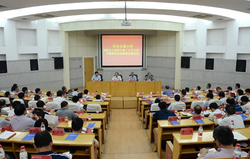
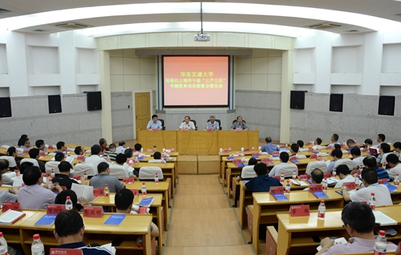
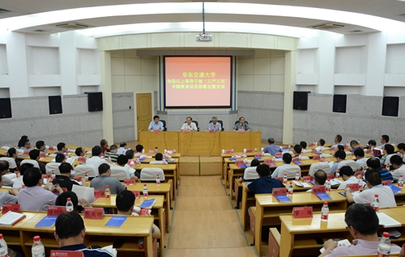
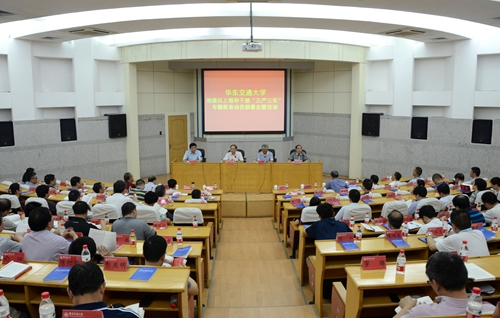
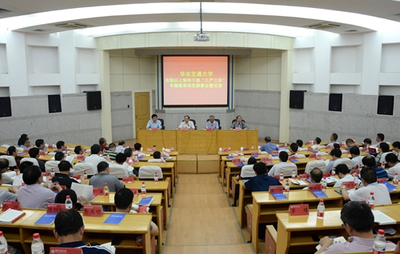

学习园地
·
习近平：干在实处永无止境 走在前列要谋新篇
·
习近平五谈“三严三实”：领导干部要树立和发扬好的作风
·
新华时评·“三严三实”一评：让人民群众当“评委”
·
新华时评·“三严三实”二评:严以修身重在坚定信仰
·
新华时评·“三严三实”三评：严以用权当心中有戒
·
新华时评·“三严三实”四评：严以律己重在自重、自省、自律
·
新华时评·“三严三实”五评：谋事要实考验领导干部政绩观
·
新华时评·“三严三实”六评：创业要实争当改革促进派
·
新华时评·“三严三实”七评：做人要实重在忠诚老实

1
2
3
4
<
>
工作动态
·
我校部署在领导干部中开展“三严三实”专题教育工作
·
我校召开“三严三实”专题教育动员部署暨党课报告会
·
万明书记上“三严三实”专题党课
·
全校“三严三实”专题教育正式启动 校党委书记万明做专题党课报告
·
“四个提升”打造高水平的宣传思想和学工队伍
·
学校启动2015年综治维稳干部培训工作
相关文件
·
中共中央办公厅印发三严三实教育方案
·
江西省印发开展“三严三实”专题教育《实施方案》
·
教育部直属机关印发“三严三实”专题教育实施方案
·
关于印发《关于在全校处级以上领导干部中开展“三严三实”专题教育实施方案》的通知
·
关于做好省属高校“三严三实”专题教育工作的通知
先进榜样
·
欧阳自立：带着母亲上学的“女强人”
·
张海龙：我的大学不迷茫
·
乐观鲁甸孩子潘垚：失去后才更懂珍惜
·
曹立勇：脚踏实地 勇于挑战 成就未来
·
殷君：做一棵向阳的常青树
·
预科班毛南族女生圆梦交大：新媒体社交下的“老生”
·
刘新：成长在交大 奉献在基层
·
胡欣诚：坚定信仰 搭乘着梦想的翅膀飞翔
·
最美共产党员先进事迹展示
典型案例
·
学习践行“三严三实”先进典型
·
虞爱华：践行“三严三实” 做到立行立改
·
吴强忠:用生命践行“三严三实”
·
慎海雄：“三严三实”是党员领导干部永远的必修课
·
别样花椒：行走在创业路上的逐梦者
·
【文件解读】《中长期发展规划》
·
“一媒一品两中心” 打造十足交大范儿
华东交通大学新闻中心日新网


 

 
